Seven Inches of Satanic Panic
This album contained two of the iconic song tracks as I think this is where they began to become more famous as their cover on Mary on a cross was a hit to many.
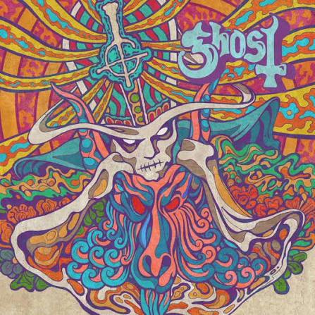
Just wanted to introduce the amazing world of Ghost!
Ghost is a Swedish heavy metal band known for their theatrical stage presence and elaborate backstory,
often referred to as "lore." The band portrays themselves as a satanic clergy
with a frontman known as the "Papa Emeritus," who is essentially the leader of the band.
Papa Emeritus/ Copia: The character of Papa Emeritus/copia serves as the lead singer and mostly the one who interacts with the fans.
Nameless Ghouls: The other members of the band are known as Nameless Ghouls, who wear identical masks and costumes,
in which changes per ERA of the Ghost band. They are mainly the ones who play the instruments and provide backing vocals.
"It's mostly the adventures of the Ministry, a politicized, gently corrupt, Satan-loving satire of the Catholic church. The various 'papas', all played by Forge, change with every album cycle as various Ministry characters manipulate things and eventually kill them off, just for the next Papa to arise." - cd:nixiedust
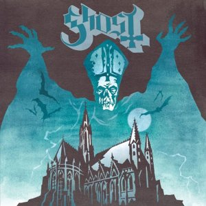 |
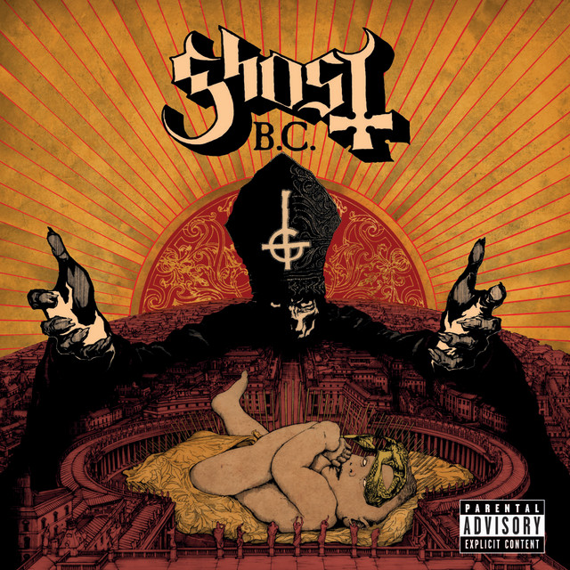 |
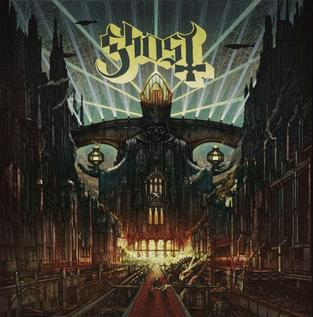 |
|---|---|---|
| Opus Eponymous (2008–2012) | Infestissumam (2013–2015) | Meliora (2015–2018) |
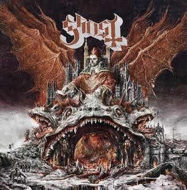 |
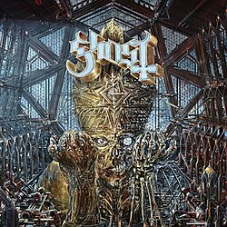 |
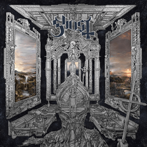 |
| Prequelle (2018–2020) | Impera (2020–2025) | Skeletá (2025–Present) |
This is mostly of the Ghouls that joined and ones that actually did leave a mark on the band:
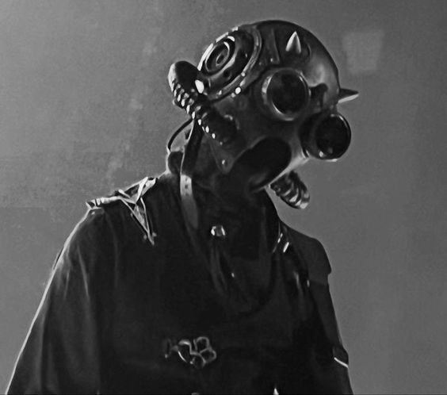
A feisty ghoul, and their lead guitarist.
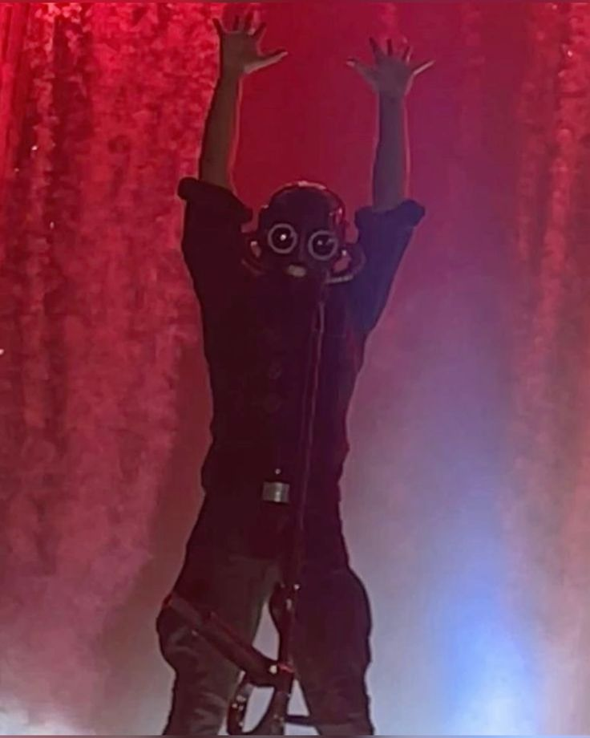
A freaky ghoul often seen to smile really wide to scare fans, that knows how to play multiple instruments, that's why he's called multi-ghoul.
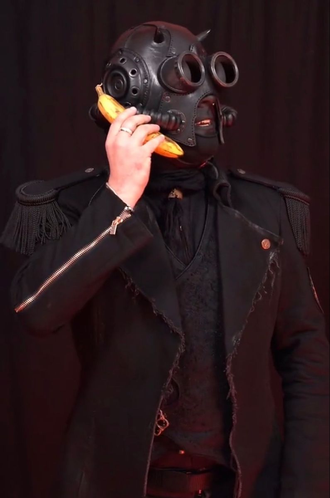
A ghoul who often duels with Sodo, and their rhythm guitarist.
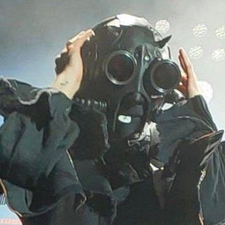
A ghoul who fell off the stage during one of his earlier performances, known as grandmaster ass wobbler. Played as the bassist.
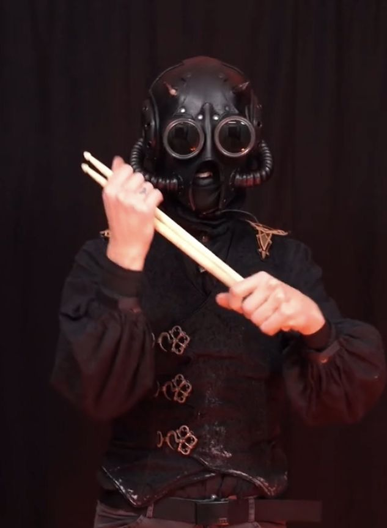
A ghoul that's really tall, he plays drums, would often throw his drum sticks to the crowd.
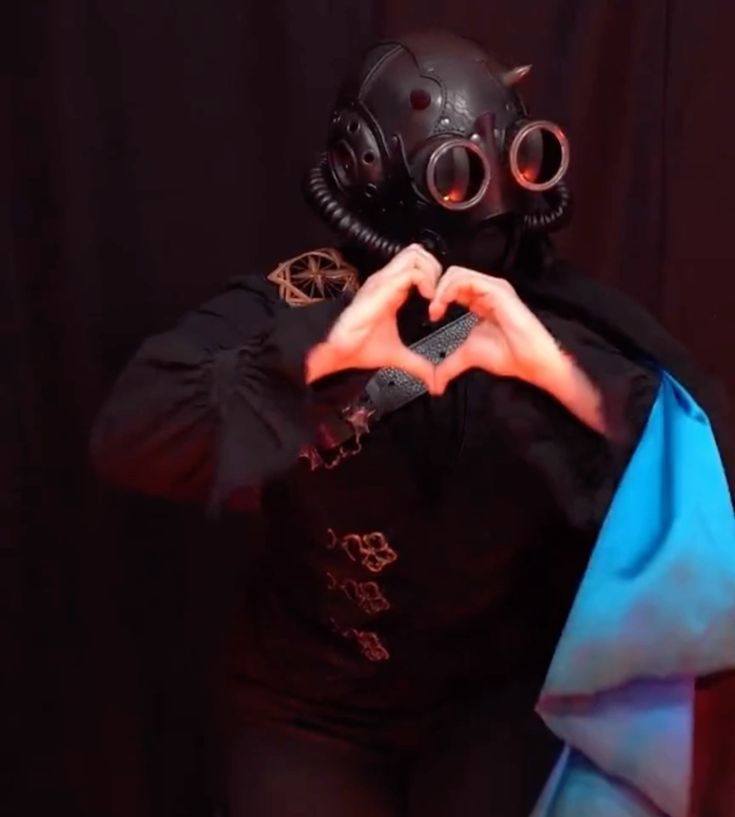
The Lioness, mainly does backup vocals and plays the keyboard.
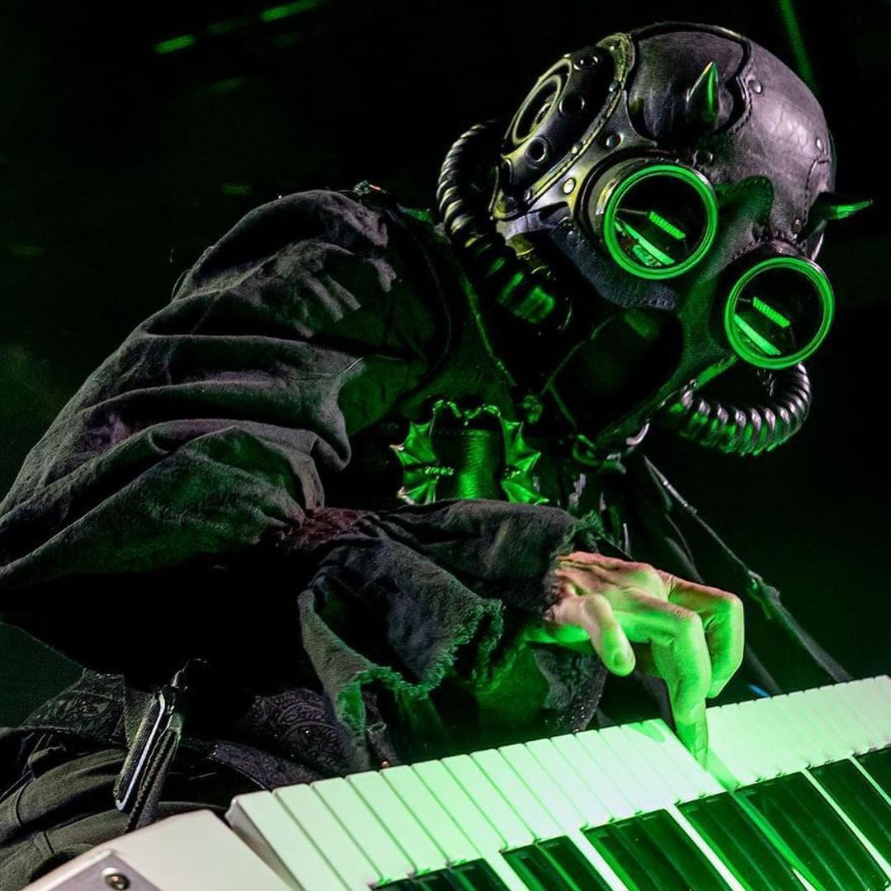
A ghoul known for her keytar solo in Mummy Dust and for affectionately interacting with those around her.
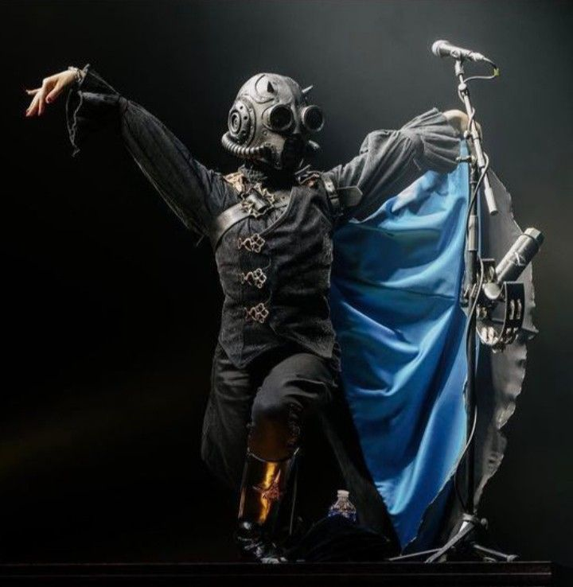
A ghoul that likes to dance around with Swiss/Multi-Ghoul. Maintained the secondary keyboards.
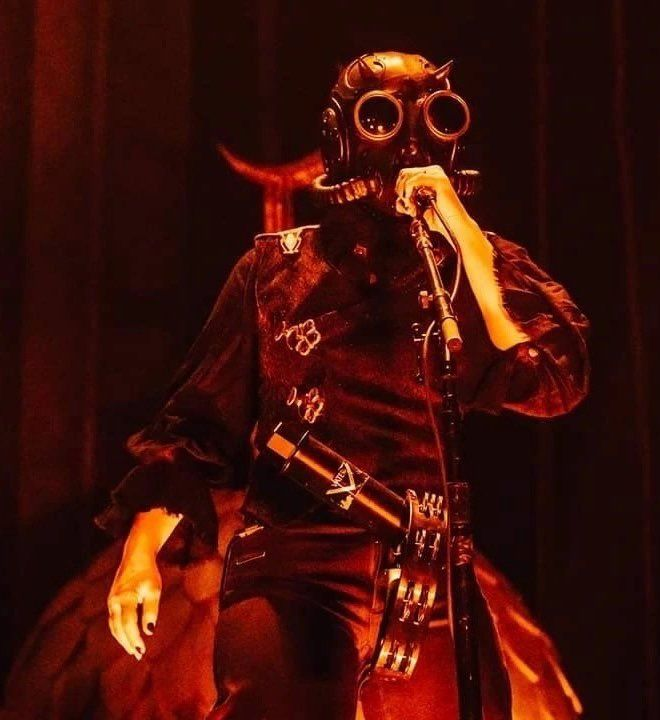
A ghoul notably more chaotic and risqué, plays the tambourine and shaker, also likes to wear her jacket more than the other ghoulletes who wear capes.
These are some of the ghouls that I remember when I joined and when I left the fandom. For me, they gave the most impact other than the new ones.
Here are some of their costumes as well:
| ERA III | ||
|---|---|---|
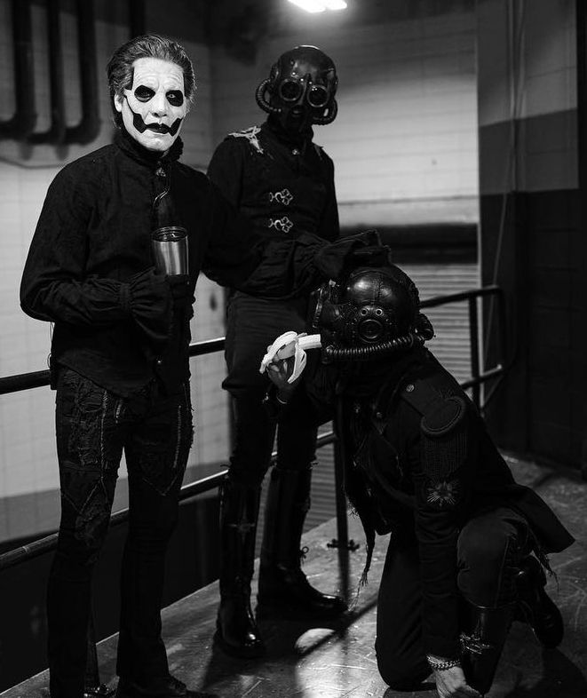 |
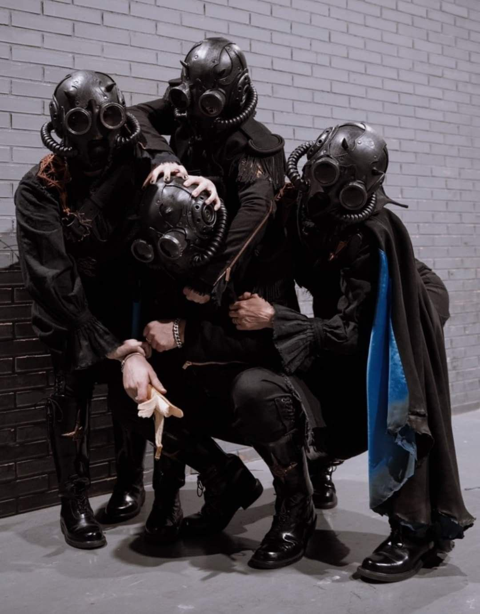 |
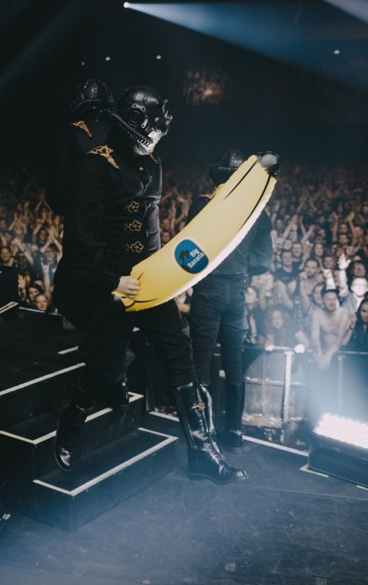 |
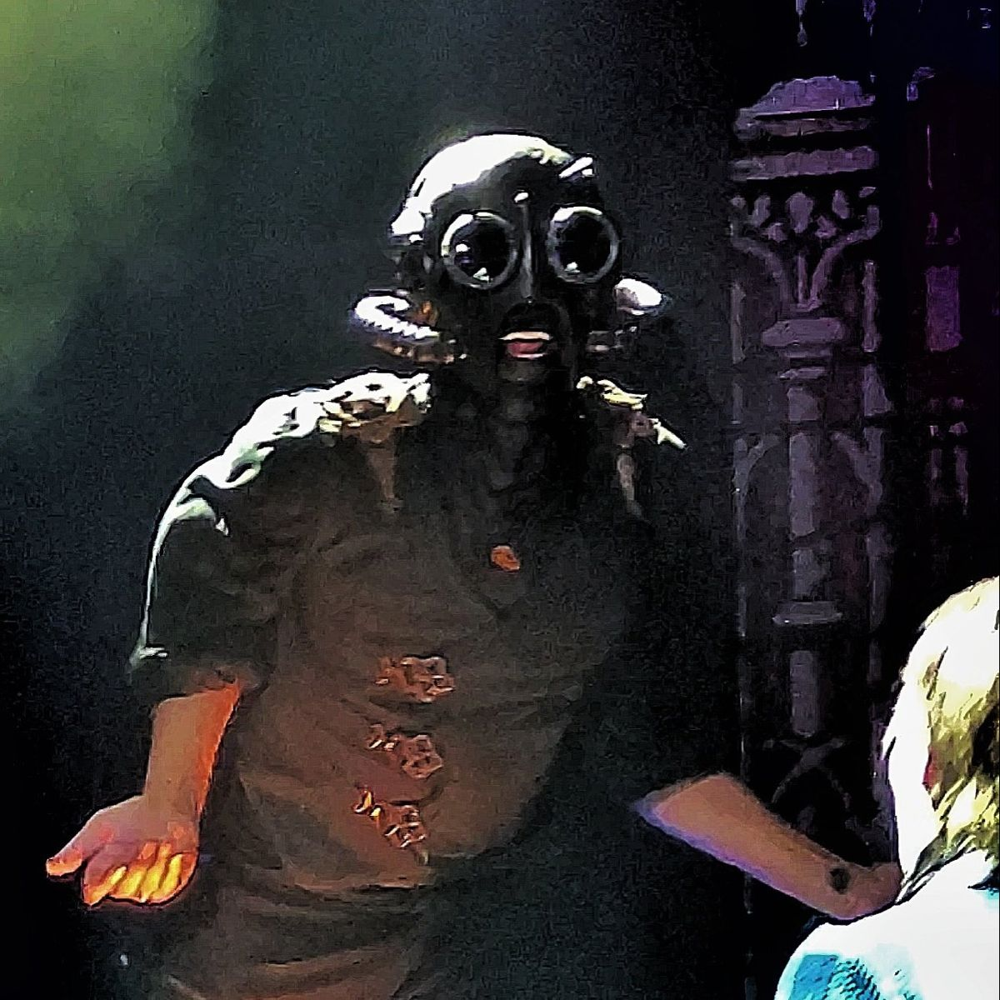 |
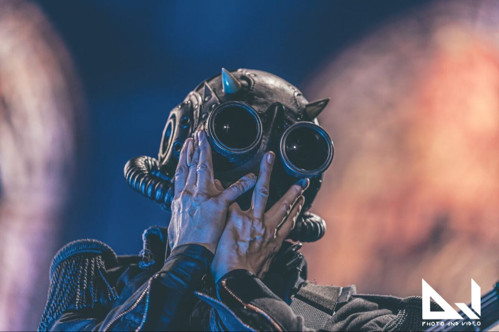 |
|
The frontman for Ghost, many papas appear as the band changes through phases from Opus Eponymous onto Skeletá...
Though in truth all papas are played by the same person, who is named Tobias Forge...
This album contained two of the iconic song tracks as I think this is where they began to become more famous as their cover on Mary on a cross was a hit to many.

This album was mostly on repeat for me, especially their songs Mummy dust, He is, Cirice, From pinnacle to the pit